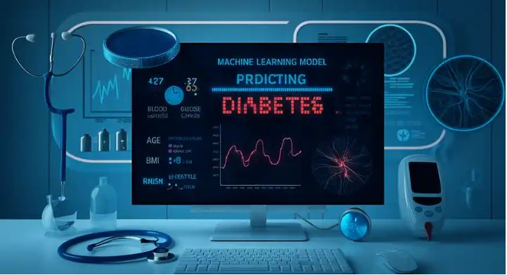

Stark Health Clinic - Diabetes Prediction Capstone Project
The aim of this project was to accurately predict the likelihood of diabetes onset, enabling early detection and timely implementation of targeted preventive measures. By doing so, Stark Health can improve patient outcomes, alleviate the strain on healthcare systems, and actively contribute to the fight against diabetes.


This was a unique project Pose Detection is a key area in computer vision and AI, focusing on detecting and tracking human body parts' positions and orientations in images or videos. These tracked points enable the analysis of motion patterns, joint positions, and overall poses, providing insights for diverse applications. Such applications include fitness, rehabilitation, augmented reality, gaming, robotics, animation, and surveillance, showcasing its broad significance across industries.
OmniMart is a versatile retail giant and has rapidly become a go-to destination for consumers seeking a diverse range of products under one roof. I used Tableau to work on the dataset provided by OmniMart. As the company grows, tracking sales, profits, and order quantities is key. I created a dashboard which compares sales from 2016 to 2017. My analysis reveals a slight sales dip (-2.06%) but an increase in order quantities (+0.27%). It also showcases top-selling categories and profit distribution, with California leading the way.
Sentiment analysis of movie reviews involves using Natural Language Processing (NLP) will determine whether a review expresses a positive, negative, or neutral opinion about a film.It combines machine learning and linguistic analysis to achieve accurate classification.The Bag of words was the best model for this project and had an accuracy of 82%.